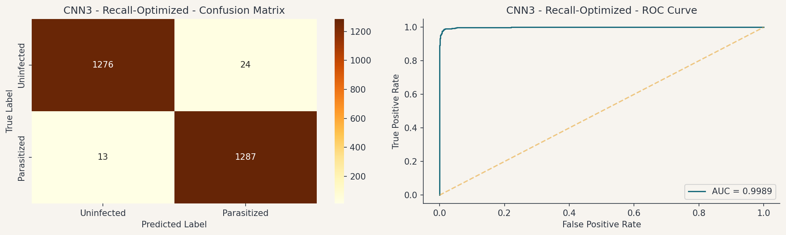
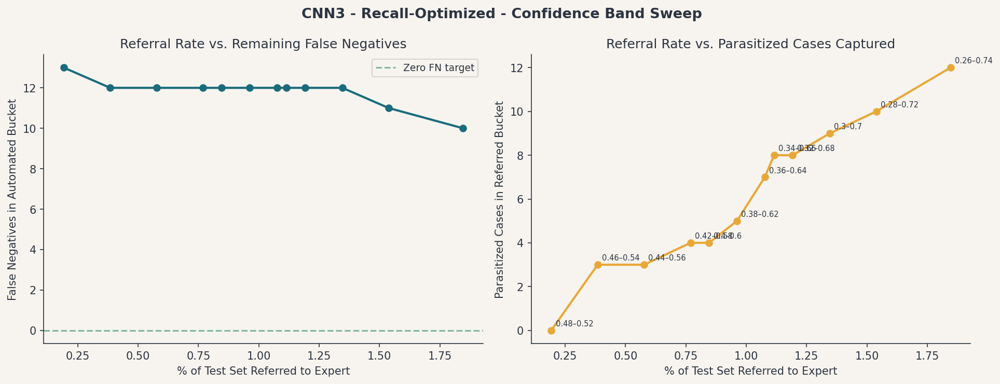

This project developed and evaluated a suite of deep learning models to automate the detection of malaria-infected red blood cells from microscopic images. The goal was to identify whether a cell is Parasitized (infected with Plasmodium) or Uninfected, and to do so with the highest possible sensitivity while maintaining strong overall classification performance. Four model architectures were trained and evaluated on 27,558 labeled cell images from the NIH Malaria Dataset. The best-performing model, CNN3 - Recall-Optimized, achieves - recall and - overall accuracy on the held-out test set — a false negative rate of - without sacrificing general classification quality.
The primary clinical metric is recall, but overall accuracy must also be high. In a medical screening context, a missed infection (false negative) sends a patient home without treatment, while a false positive triggers an unnecessary follow-up. These errors are not symmetric: undetected malaria can progress to organ failure and death; a false positive causes inconvenience and added cost. Recall is therefore the ranking criterion. However, a high-recall model that generates excessive false positives is not clinically viable. The target is a model that captures the overwhelming majority of infected cells while maintaining accuracy high enough to be trusted by clinical staff. CNN3 meets both conditions.
Finding 1: A simple custom CNN sets a strong baseline. The three-layer CNN1 baseline achieves - recall, - overall accuracy, and - AUC-ROC in just 8 training epochs. This confirms that the visual signal distinguishing parasitized from uninfected cells (dark Giemsa staining of the parasite ring form) is learnable with a compact, inexpensive model — and that high recall and high accuracy are simultaneously achievable from the outset.
Finding 2: Data augmentation improved training stability but exposed a calibration failure. CNN2, which added augmentation and architectural improvements (BatchNormalization, GlobalAveragePooling2D), produced training and validation accuracy within 0.5% of each other, a tighter gap than CNN1. However, the model's sigmoid output probabilities clustered far below 0.5, causing a collapse in recall to - at the default operating threshold, despite an AUC-ROC of -. The model had strong discriminative ability but was miscalibrated. Threshold scanning confirmed this: re-evaluating at a threshold of - recovered - recall. This finding demonstrates that a high AUC is necessary but not sufficient, and that the training configuration, not just the architecture, governs real-world performance.
Finding 3: Class weighting resolved the calibration failure and set the best overall result. CNN3 holds CNN2's architecture and augmentation pipeline constant and changes only the training configuration: a class weight of 2:1 (Parasitized vs. Uninfected) was applied, and Recall was added as a compiled training metric. CNN3 achieved - recall with only - false negatives out of 1,300 Parasitized test cells, an AUC-ROC of -, and - overall accuracy. The class weighting penalizes missed infections without forcing the model to flag everything as Parasitized: overall accuracy remains comparable to CNN1's baseline. Because the architecture and data pipeline are identical to CNN2, the performance difference between the two models traces entirely to the training objective. This is the cleanest controlled experiment in the study.
Finding 4: Transfer learning with MobileNetV2 underperformed at this dataset and resolution. MobileNetV2, pre-trained on ImageNet's 1.28 million natural images, achieved - recall (- false negatives) despite a competitive AUC-ROC of -. The probable explanation is a domain gap between ImageNet's natural scene features and Giemsa-stained microscopy crops at 64×64 pixels, combined with insufficient fine-tuning duration. Transfer learning remains a strong candidate for future work at higher input resolution.

The recommended model is CNN3 - Recall-Optimized. Its architecture is a custom CNN with three convolutional blocks, identical in structure to CNN2. The performance advantage over CNN2 derives entirely from the training configuration.
| Parameter | Value |
|---|---|
| Architecture | 3-block CNN with dual Conv2D layers, BatchNormalization, Dropout, GlobalAveragePooling2D |
| Conv filter depth | 32 → 64 → 128 filters per block, 3×3 kernels, ReLU activation |
| Classification head | Dense(256, ReLU) → Dropout(0.5) → Dense(1, sigmoid) |
| Input size | 64×64 RGB (pixel values normalized to [0, 1]) |
| Optimizer | Adam |
| Loss function | Binary cross-entropy |
| Class weight | {Uninfected: 1.0, Parasitized: 2.0} |
| Training regime | Early stopping on val_loss, patience 5; LR reduction on plateau (factor 0.5, patience 3) |
| Data augmentation | Random rotation ±20°, horizontal/vertical flip, width/height shift ±10%, zoom ±10% |
| Epochs trained | - (best weights from epoch -) |
| Saved model size | ~2.1 MB (.keras format) |
| Test recall | - — - false negatives out of 1,300 Parasitized test images |
| Test AUC-ROC | - |
| Test accuracy | - |
The complete model performance comparison across all evaluated architectures is shown below.
| Model | Recall | False Negatives | Accuracy | AUC-ROC |
|---|---|---|---|---|
| Loading… | ||||
Malaria is caused by Plasmodium parasites transmitted through the bites of infected Anopheles mosquitoes. Once in the bloodstream, the parasites invade red blood cells, and in the absence of timely treatment, the infection can progress to organ failure and death. According to the WHO, more than 229 million malaria cases and approximately 400,000 deaths were reported globally in 2019. Sub-Saharan Africa bears 94% of that burden; children under five account for 67% of all malaria deaths worldwide.
The standard diagnostic method, microscopic examination of Giemsa-stained blood smear slides, is time-intensive and entirely dependent on the availability of trained microscopists. In low-resource, high-burden settings, that expertise is typically scarce, unevenly distributed, and subject to operator fatigue over long shifts. Inter-observer variability further undermines diagnostic consistency: studies report that agreement between expert microscopists on the same slide falls significantly in resource-constrained settings. The consequence is that infection rates in communities most affected by malaria are simultaneously the hardest to measure accurately.
Malaria diagnosis at scale requires a skilled microscopist examining hundreds of individual cells per slide, for dozens of slides per day. There are not enough trained microscopists to close this gap in high-burden regions. An automated, high-recall screening tool that routes only ambiguous cases to human review would materially reduce that dependency.
The proposed solution is a convolutional neural network (CNN) binary classifier that takes a single 64×64 cell image as input and outputs a prediction of Parasitized or Uninfected. The solution design was guided by four principles:
Why CNN3 won over transfer learning: Transfer learning with MobileNetV2 was the a priori expected winner, given its pre-training on 1.28 million diverse images. The result was reversed. At 64×64 pixel resolution, the domain gap between ImageNet's natural scene features and Giemsa-stained microscopy crops appears to limit the expected advantage of pre-trained representations. CNN3, trained from scratch on the domain-specific dataset, learned features more directly aligned with the parasite's visual signature. This does not rule out transfer learning at higher resolution (128×128 or 224×224), where deeper pre-trained feature hierarchies are more likely to be beneficial.

For a diagnostic lab operating in a malaria-endemic region, the deployment of CNN3 in triage mode would affect operations in three ways:
Speed. A trained microscopist examining a standard blood smear slide manually, at the WHO-recommended thoroughness level, requires 5 to 15 minutes per slide. A software pipeline running CNN3 (cell segmentation + per-cell classification) processes a comparable slide in under 30 seconds. For a lab handling 100 slides per day, this difference represents a shift from 8+ hours of continuous microscopy to automated pre-screening with microscopist review of the borderline -.
Consistency. The model applies the same learned decision boundary to every cell, irrespective of time of day, case volume, or operator experience. The false negative rate of - is fixed at the hardware level, unlike manual review where fatigue and caseload affect accuracy. This consistency is particularly valuable for longitudinal studies where inter-rater drift would otherwise confound prevalence estimates.
Access. The model is compact (~2.1 MB), runs on CPU, and requires no internet connection after deployment. This makes it viable as a component of a mobile diagnostic kit in settings where reliable power and connectivity are intermittent. The Claros implementation is designed with this deployment profile in mind.
| Stakeholder | Action | Timeline |
|---|---|---|
| Lab Directors | Identify a pilot site with an existing digitization workflow. Allocate 2 weeks for parallel-run data collection. Assign a point-of-contact microscopist to review borderline cases and provide ground truth labels during the pilot. | Month 1 |
| Clinical Staff | Complete a 2-hour training module covering: how the model classifies cells, what the borderline referral flag means, and how to record disagreements. Model outputs are a decision-support tool; final diagnosis remains with the clinician. | Month 2–3 |
| IT / Procurement | Procure hardware for two pilot sites: one laptop or mini-PC per site ($300–$500, no GPU required), a USB microscopy camera adapter (if not already digitized), and a local-network storage device for slide archives. No cloud subscription is required for inference. | Month 1–2 |
| Program / Donor Partners | Budget for a 6-month pilot covering hardware, local IT setup, staff training, and a 0.5 FTE data coordinator to manage the ground-truth validation workflow. Estimated total: $15,000–$25,000 across two pilot sites. | Pre-launch |
| Regulatory / Ethics | Initiate IRB review for the pilot protocol. Confirm that the AI tool is framed as decision support (not autonomous diagnosis) in all patient-facing communications. Review applicable in-country digital health regulations for diagnostic software. | Month 1–2 |
The figures below are based on published literature benchmarks for manual malaria microscopy and publicly available hardware costs. They are illustrative planning assumptions intended to support stakeholder decisions, not audited operational projections. Site-specific validation will be required to confirm the estimates before scaling.
Estimated time savings per pilot site (100 slides/day, 200 cells per slide):
Estimated direct cost implications:
Estimated health impact (illustrative):
Four analytical extensions have the highest expected return relative to effort:
CNN3 is ready for a structured pilot. The model is compact, high-recall, and deployable on standard hardware. The next required step is not more model development, it is a controlled pilot study at a partner lab to confirm that the - recall holds under real-world staining and imaging conditions, and to establish the operational workflow for borderline-case referral. A 6-month pilot with 2 sites and a $15,000–$25,000 budget would provide the evidence base to support a scale decision.